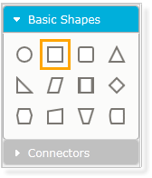
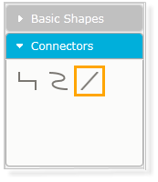

The SymbolPalette control displays the node shapes, connector shapes, and allows you to drag the symbols and connectors onto the diagram.
Appearance and Structure
The following figures outline the basic appearance and structure of the symbol palette in Essential Diagram for MVC.

Figure 129: Symbol Palette Containing Basic Shapes for Nodes

Figure 130: Symbol Palette Containing Basic Connectors
Properties
|
Property |
Description |
Type of the Property |
Value it Accepts |
Any Other Dependencies/ Sub-Properties Associated |
|
IsSymbolPaletteEnabled |
This property is used to enable or disable the symbol palette. The default value is true. |
Dependency Property |
Boolean |
No (This is not supported in SVG Mode) |
|
SymbolPaletteWidth |
This property is used to change the width of the symbol palette. |
Dependency Property |
Double |
No (This is not supported in SVG Mode) |
The symbol palette can be displayed by setting the IsSymbolPaletteEnabled property to true, which is the default setting.
The following code snippets illustrate the symbol palette properties.
 Enabling the addition of a symbol palette in
Diagram MVC
Enabling the addition of a symbol palette in
Diagram MVC